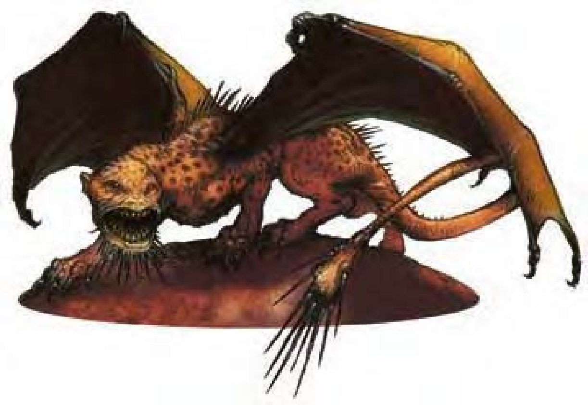

这种生物不管从哪方面来看都是个怪物。他有近似于人形野兽的头部，狮子般的身体与龙的翅翼。他的背脊上长满弯曲的倒钩，长尾末端则有一堆可怕的尖刺。
刺尾狮是一种凶猛的生物，以各种活物为食，个性狡猾邪恶。他们可以是致命的敌人，也可以是强大的盟友。
一般的刺尾狮身长约10英尺，体重约1000磅。
刺尾狮通晓通用语。
| 资料栏位 | 刺尾狮 (Manticore) 大型魔法兽 |
| 生命骰 | 6d10+24 (57HP) |
| 先攻 | +2 |
| 速度 | 30英尺 (6格)、飞行50英尺 (笨拙) |
| 防御等级 | 17 (-1体型、+2敏捷、+6天生)、接触11、措手不及15 |
| 基本攻击/擒抱 | +6 / +15 |
| 攻击 | 爪抓+10近战 (2d4+5)；或6尖刺+8远程 (1d8+2 / 19-20) |
| 全力攻击 | 2爪抓+10近战 (2d4+5) 及 啮咬+8近战 (1d8+2)；或6尖刺+8远程 (1d8+2 / 19-20) |
| 占据/触及 | 10英尺 / 5英尺 |
| 特殊攻击 | 尖刺 |
| 特殊能力 | 黑暗视觉60英尺、昏暗视觉、灵敏嗅觉 |
| 豁免 | 强韧+9、反射+7、意志+3 |
| 属性 | 力量20、敏捷15、体质19、智力7、感知12、魅力9 |
| 技能 | 聆听+5、侦察+9、生存+1 |
| 专长 | 空袭、多重攻击、追踪B、专攻武器 (尖刺) |
| 环境 | 热暖带沼泽 |
| 组织 | 单独、成双或兽群 (3-6) |
| 宝藏 | 标准 |
| 阵营 | 通常守序邪恶 |
| 进化 | 7-16HD (大型)；17-18HD (超大型) |
| 等级修正值 | +3 (部属) |
刺尾狮常以尖刺齐发来展开战斗，然后就结束了。室外战场上他们会利用强大的翅翼待在高处。
尖刺 (特异)：只要轻挥一下尾巴，刺尾狮可用标准动作射出6根尖刺 (每根刺分别做攻击检定)。这种攻击的距离最远180英尺，无射程单位。所有目标相距不可超过30英尺。每24小时刺尾狮最多可发射24根尖刺。
技能：刺尾狮在进行“侦察”检定时具有+4种族加值。